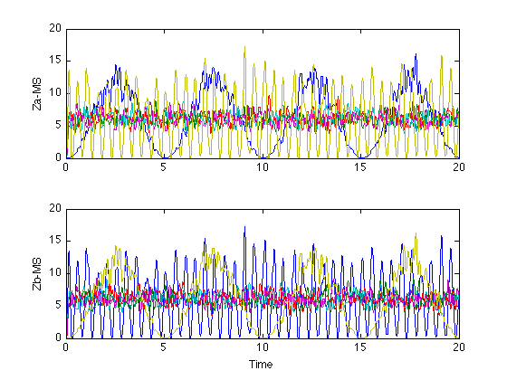
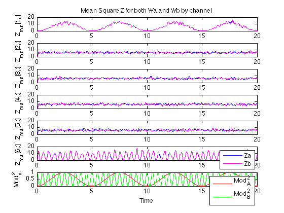
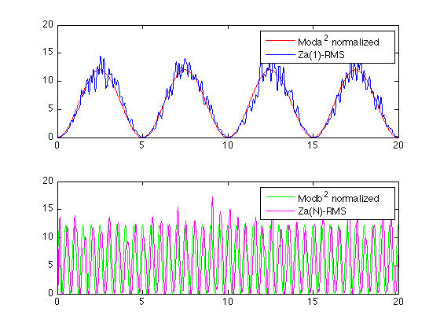

Common Spatial Patterns example
Bruce J. Gluckman 4/2010
See references by Koles, 1991 EEG and clincial NeuroPhys 79, PMID 1721571
Contents
- Theory of Common Spatial Patterns (CSP)
- First a question - what does SVD do
- Now create Data
- Now compute estimates of the covariance matricies
- Now compute W
- Now test CPA
- Plot results for Za (computed from Sa) and Zb (computed from Sb)
- Compare rank ordered signals in Za and Zb
- Finally note the projections of our lead fields onto new space
- now compare predicted vs measured for Za.
Theory of Common Spatial Patterns (CSP)
general scheme: Assume a lead field model for EEG with sources S and assume there are at least two kinds of sources, call them types a,b and that you have EEG that you can identify as both mixtures of BOTH and is isolated to (or excludes) one
if you want, by extension, add some noise. Now we want to find a measure that best isolate data from each of these sources
Mathematically, a lead field model says that the EEG across the leads is a linear projection (linear mixture) of the sources, plus noise
EEG = M*S + U
we adopt a notation that the the EEG has N channels, which we pack in different rows, and that measured times go across in columns. So EEG = (NxT) where T is number of times.
Likewise, we imagine Q sources, each of which have their time dependence, and lead fields for each packed into the matrix M. so S = (QxT) and M = (NxQ)
for our purposes, we can break up M*S into three parts associated with source a,b and noise
EEG = Ma*Sa + Mb*Sb + Mn*Sn + U
which we can reinterpret as
EEG = Ea + Eb + En
with Ea = Ma*Sa Eb = Mb*Sb En = Mn*Sn + U
Note that dimension of the E's are all NxT though we could make different sample types for example that have {a, b, both} types of data
CSP Steps are as follows:
1) identify time periods such that the EEG contains two of the three types of activity: EEGa => mostly type a data (or NOT type a data) EEGb => mostly type b data EEGc => composite type a and b (can be simultaneous or concatonated [EEGa EEGb]
2) Define the normalized covariance C = EEG*EEG'/trace(EEG*EEG') Compute for EEGa, EEGc, called Ca, Cc technically or for consistency, the normalization value should always be the same. Normalization really is only needed for comparing patterns
Note that Cc = Ca + Cb
Note on decompositon - we can do an eigenvalue decomposition
C = U*L*U'
L is diagonal eigenvalues
U has eigenvectors in columns
U'*U = I3) Compute the prewhitening transformation P as follows: a) decompose Cc = Uc*Lc*Uc' b) round off singluar eigenvalues elements in Lc c) define inverse square root of Lc Isqrt(Lc) such that the diagonal values are 1/sqrt(Lc_i) for non-singluar eigenvalues d) P = Isqrt(Lc)*Uc'
4) Define covariance of prewhitened data as S = P*C*P' a) Sc = P*(Ca + Cb)*P' Sc = Sa + Sb b) by construction Sc = I I = Sa + Sb Sb = I - Sa * c) Decompose Sa = B*Psia*B' d) if pre/post multiply * by B' B you get B'*Sb*B = I-Psia the RHS of which is diagonal SO if If decompose Sb = R*Psib*R' Then B'R = I Psib = I-Psia B is also set of eignenvectors for Sb B eigenvectors are Common Spatial Patterns to both Sa and Sb Note that the order of Psia is decreasing and Psib is Increasing
5) Now define overall transformation to new coordinate system
ZEEG = W*EEG
W = B'*P
ZEEG will contain primarily a type data in first row and
b type data in last rowFirst a question - what does SVD do
sig = [2 1; 1 1]; sig = sig/trace(sig); [u,s,v]=svd(sig); % Note that since sig is Hermitian (sig' = sig) % u'=v disp('sig='); disp(sig); disp(['[u,s,v]=svd(sig)']); disp('eigenvalues s'); disp(s); disp('u'); disp(u); disp('u-v'' = '); disp(u-v); disp('u''*u = '); disp(u'*u); % so our observation is that, given a square Hermitian matrix sig % [u,l,v] = svd(sig) % yields an ordered set of eigenvalues on the diagonal of l % and two matricies u = v' % u'*u = 1; % the columns of u have the eigenvectors. clear all; close all; %
sig=
0.6667 0.3333
0.3333 0.3333
[u,s,v]=svd(sig)
eigenvalues s
0.8727 0
0 0.1273
u
-0.8507 -0.5257
-0.5257 0.8507
u-v' =
1.0e-15 *
0.4441 0.1110
0.1110 -0.3331
u'*u =
1.0000 -0.0000
-0.0000 1.0000
Now create Data
Assume 2 sources - Sa, Sb wtih projections onto N channel EEG with source Lead Fields Ma, Mb Then EEG is EEG = Ma*Sa + Mb*Sb + U where U is a mixure of common Uc and indpendent Ui NOISE where of course 'noise' mean other sources
EEG = Ma*Sa + Mb*Sb + Mc*Sc + Ui
Number of Channels N
N = 6; % Acqusition Rate SPS = 1000; % Ma = [-1 2 -1 .1 .1 .1 ]'; Mb = [-.1 -.1 0 -1 2 -1]'; Mn = [ .1 .2 .3 .2 .1 -.1]'; % % Now make time series Ea = 1.0 * Ma * randn(1,1000) + ... 0.0 * Mb * randn(1,1000) + ... 0.2 * Mn * randn(1,1000) + ... 0.1 * randn(6,1000); % Eb = 0.0 * Ma * randn(1,1000) + ... 1.0 * Mb * randn(1,1000) + ... 0.2 * Mn * randn(1,1000) + ... 0.1 * randn(6,1000); % Time = (0:1/SPS:20); NPTS = length(Time); ModA = sin(0.2*pi*Time); ModB = cos(2.0*pi*Time); Ec = Ma * (ModA.* randn(1,NPTS)) + ... Mb * (ModB.* randn(1,NPTS)) + ... 0.2 * Mn * randn(1,NPTS) + ... 0.1 * randn(6,NPTS);
Now compute estimates of the covariance matricies
Cc = Ec*Ec'; Cc = Cc/trace(Cc); % Ca = Ea*Ea'; Ca = Ca/trace(Ca); % now decode [Uc,Lc,Vc] = svd(Cc); verysmall = 1e-10; sLci = Lc; for ind=1:N sLci(ind,ind) = (Lc(ind,ind)>verysmall)/sqrt(Lc(ind,ind)); end P = sLci * Uc'; %
Now compute W
but do it separately for a and for b. They should yeild roughly the same results, though not quite exactly.
Ca = Ea*Ea';
Ca = Ca/trace(Ca);
Sa = P*Ca*P';
[Ba,Psia,Va] = svd(Sa);
Wa = Ba'*P;
%
Cb = Eb*Eb';
Cb = Cb/trace(Cb);
Sb = P*Cb*P';
[Bb,Psib,Vb] = svd(Sb);
Wb = Bb'*P;
Now test CPA
do this by computing Z for both the Wa and the Wb transforms then we'll compare the results Note that since we are maximizing the projected variances we'll use a mean-square computed by first squaring then low pass filtering.
later when we compare these results, we'll need to allow for a short phase delay between actual changes in source amplitudes (encoded with the Mod functions) and the MS which we've gotten with a low-pass filter
Za = Wa*Ec; Zb = Wb*Ec; % use a mean square low-pass filtered by .5 s (2 Hz) to estimate Za2 = Za.*Za; Zb2 = Zb.*Zb; % [b,a] = butter(4,5/(SPS/2)); % Za2f = filter(b,a,Za2,[],2); Zb2f = filter(b,a,Zb2,[],2);
Plot results for Za (computed from Sa) and Zb (computed from Sb)
figure; Fig1.a(1) = subplot(2,1,1); plot(Time,Za2f); ylabel('Za-MS') Fig1.a(2) = subplot(2,1,2); plot(Time,Zb2f); ylabel('Zb-MS') xlabel('Time') linkaxes(Fig1.a,'xy'); ylim([0 20]);
Compare rank ordered signals in Za and Zb
figure; for ind = 1:N Fig2.a(ind) = subplot(N+1,1,ind); plot(Time,Za2f(ind,:),'b',... Time,Zb2f(1+N-ind,:),'m'); lab = sprintf('Z_m_s[%d,:]',ind); ylabel(lab); if (ind==1) title('Mean Square Z for both Wa and Wb by channel'); end end linkaxes(Fig2.a(1:N),'xy'); legend('Za','Zb'); Fig1.a(N+1) = subplot(N+1,1,N+1); plot(Time,ModA.*ModA,'r',... Time,ModB.*ModB,'g'); ylabel('Mod_s^2') xlabel('Time') legend('Mod_A^2','Mod_B^2'); linkaxes(Fig2.a,'x');
Finally note the projections of our lead fields onto new space
MZa = Wa * Ma;
MZb = Wa * Mb;
Mzn = Wa * Mn;
disp('Mza \n Mzb \n Mzn');
disp([MZa'; MZb'; Mzn']);
Mza \n Mzb \n Mzn -3.4712 0.0016 -0.1195 0.0863 -0.0702 0.0024 -0.0589 0.0030 0.0037 -0.0261 -0.0066 -3.4967 -0.1949 0.8099 5.5511 3.9876 4.4848 -0.0348
now compare predicted vs measured for Za.
Use weight from Ma and Mb through Wa to normalize the input Moda and Modb
Norma = MZa(1)*MZa(1); Normb = MZb(N)*MZb(N); figure; Fig3.a(1)=subplot(2,1,1); plot(Time,Norma*ModA.*ModA,'r',... Time,Za2f(1,:),'b'); legend('Moda^2 normalized', 'Za(1)-RMS'); Fig3.a(2)=subplot(2,1,2); plot(Time,Normb*ModB.*ModB,'g',... Time,Za2f(N,:),'m'); legend('Modb^2 normalized', 'Za(N)-RMS'); linkaxes(Fig3.a,'xy'); ylim([0 20]);